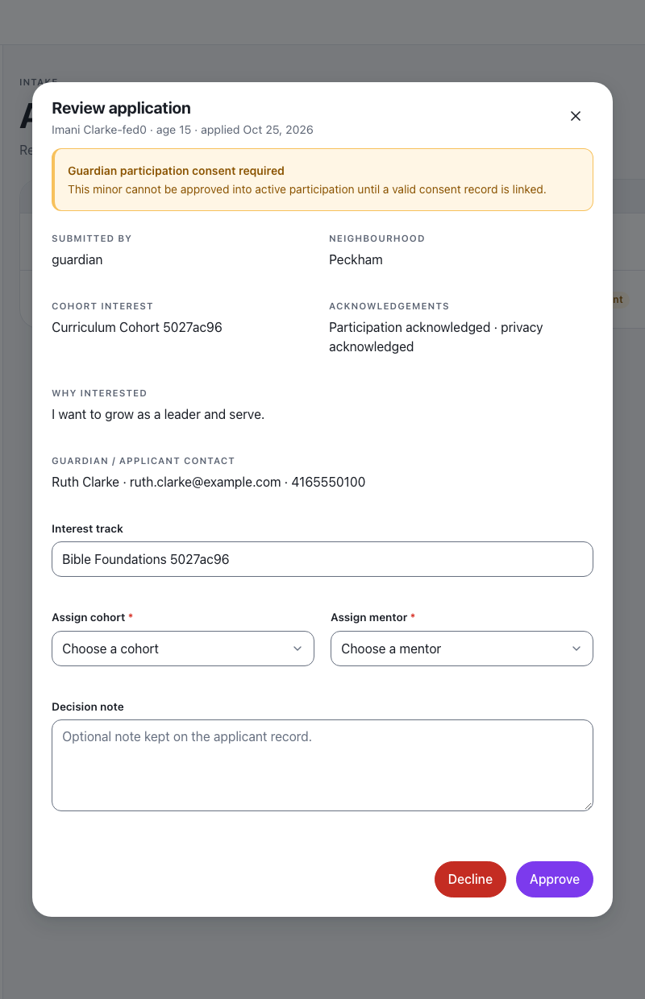
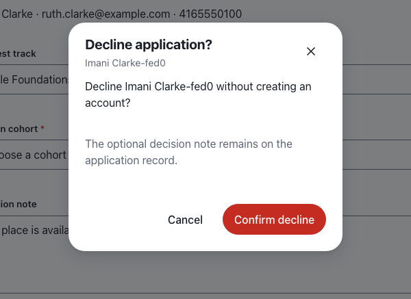
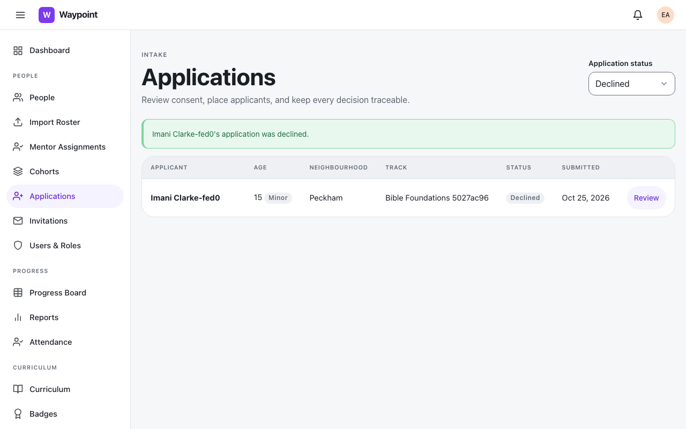
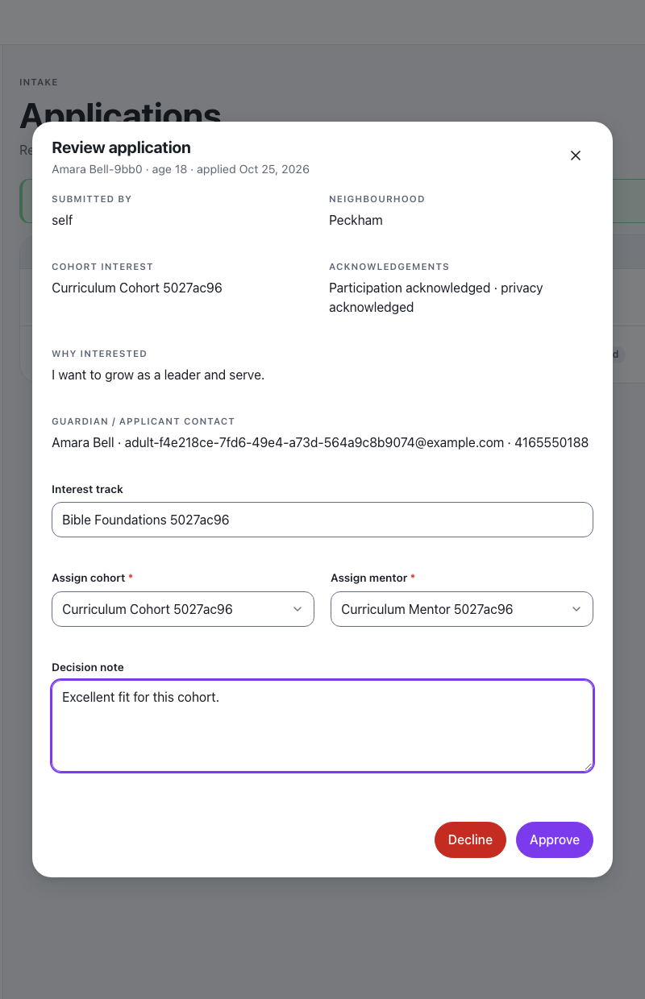
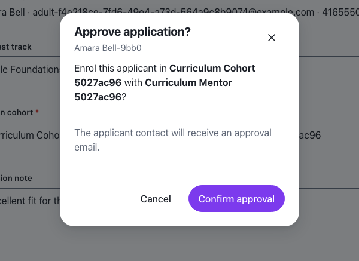
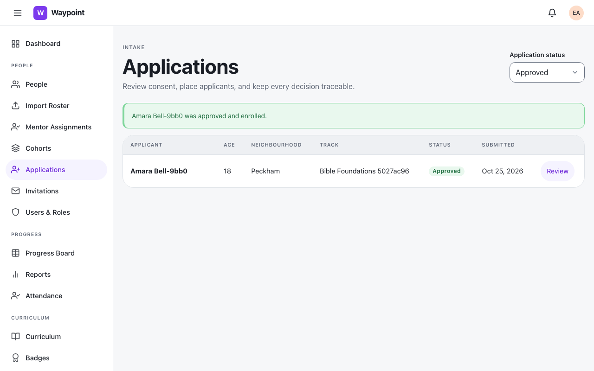

Waypoint · Video 020
Deciding on an application
Decline softly, or approve and enroll
A minor without consent waits to take part

Guardian consent required before taking part
Decline, with an optional note

No account is created
Declined, and still on record

The application stays on record
A cohort and a mentor are required

Track, cohort, mentor and note
Confirm the placement

The applicant contact receives an approval email
Approved and enrolled

Youth account created and enrolled
Things to remember
- No guardian consent, no approval for a minor
- A decline is soft: note optional, no account created
- Approval needs a cohort and a mentor
- Only program administrators decide, and it is audited